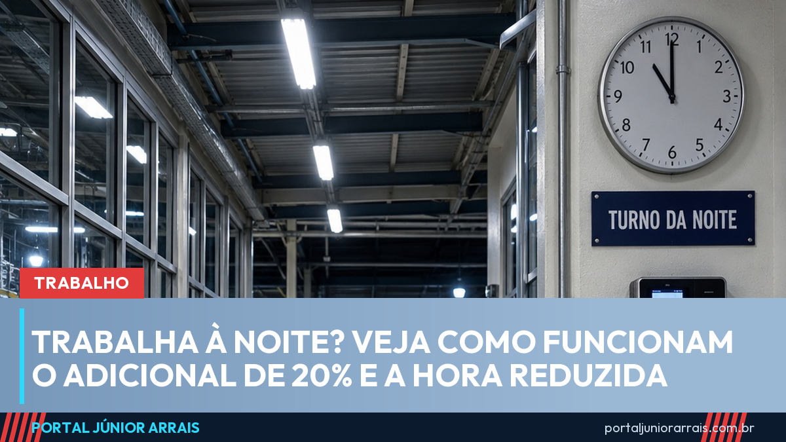

Adicional noturno: 20% a mais, hora de 52 minutos e o que vale depois das 5h

Quem trabalha na cidade entre as 22h e as 5h tem direito ao adicional noturno de pelo menos 20% sobre o valor da hora normal. E a hora da noite é mais curta: conta como 52 minutos e 30 segundos, e não 60. As regras estão no artigo 73 da CLT. No campo, o horário e o percentual são outros.
A Constituição também protege o trabalho noturno: o artigo 7º, inciso IX, manda que ele seja pago com valor maior que o do trabalho de dia.
Quanto vale e em que horário
O adicional é de no mínimo 20% sobre a hora diurna. A convenção ou o acordo coletivo da categoria pode fixar um percentual maior. Para o trabalhador urbano, noite é o período das 22h de um dia às 5h do dia seguinte (art. 73, §2º). Quem tem jornada que começa antes das 22h recebe o adicional sobre as horas que caem dentro desse horário.
O valor tem de aparecer no contracheque. Pela Súmula 60 do TST, o adicional pago com frequência integra o salário para todos os efeitos. Por isso ele entra na conta das férias, do 13º salário, do FGTS e do aviso prévio. Se a pessoa passa a trabalhar de dia, o adicional deixa de ser pago, porque ele existe para compensar o trabalho noturno.
O trabalho doméstico feito à noite tem as mesmas regras: horário das 22h às 5h, adicional de 20% e hora reduzida, pelo artigo 14 da Lei Complementar 150/2015.
A hora noturna é mais curta
A lei manda contar cada hora noturna como 52 minutos e 30 segundos (art. 73, §1º). Na prática, quem trabalha das 22h às 5h fica 7 horas no relógio, mas a empresa tem de considerar 8 horas trabalhadas. Essa diferença precisa ser paga.
Se a conta da hora reduzida fizer a jornada passar do limite combinado, o excesso é hora extra. E a hora extra feita à noite é calculada já com o adicional noturno incluído, o que deixa o valor maior. Veja como funciona a conta básica na matéria sobre hora extra e banco de horas.
Passou das 5h, o adicional continua
É comum o turno da noite se estender pela manhã. Nesse caso, a CLT diz que as prorrogações do trabalho noturno seguem as mesmas regras (art. 73, §5º). E a Súmula 60, item II, do TST é clara: se a pessoa cumpriu toda a jornada no horário noturno e continuou trabalhando depois das 5h, o adicional também vale para essas horas a mais.
Exemplo: quem entra às 22h e sai às 7h recebe o adicional também pelas horas entre 5h e 7h. Quando a jornada começa antes das 22h, como em alguns plantões de 12 horas, os tribunais já deram decisões diferentes. O TST tem estendido o adicional nesses casos, mas a resposta depende da escala e de cada processo.
No campo, o horário é outro
O trabalhador rural segue a Lei 5.889/1973. Pelo artigo 7º, a noite vai:
- Na lavoura: das 21h de um dia às 5h do dia seguinte;
- Na pecuária: das 20h de um dia às 4h do dia seguinte.
Em troca, o adicional rural é maior: 25% sobre a remuneração normal. A lei do trabalho rural não prevê a hora reduzida de 52 minutos e 30 segundos, que vale para o trabalhador urbano.
Como conferir e cobrar
Compare os horários do cartão de ponto com o contracheque. Veja se há uma linha de adicional noturno e se o número de horas considera a hora reduzida. Guarde cópias dos holerites, das escalas e de mensagens com horários de entrada e saída.
Se o pagamento estiver errado, o primeiro passo pode ser conversar com o RH ou procurar o sindicato da categoria. Na Justiça do Trabalho, dá para cobrar os últimos cinco anos, desde que a ação seja aberta em até dois anos depois da saída da empresa (Constituição, art. 7º, XXIX). Para analisar o seu caso, procure um profissional de sua confiança.
Fontes oficiais
- CLT — Decreto-Lei 5.452/1943 (arts. 73 e 66)
- Lei 5.889/1973 — trabalho rural (art. 7º)
- Lei Complementar 150/2015 — emprego doméstico (art. 14)
- TST — Súmulas (Súmula 60)
- Constituição Federal (art. 7º, IX e XXIX)
Conteúdo informativo — não substitui orientação individualizada sobre o seu caso.
Júnior Arrais · Editor do Portal Júnior Arrais
Comunicador de Ubá (MG). Escreve todos os dias sobre benefícios sociais, INSS, trabalho e economia do dia a dia, a partir do Diário Oficial, de portarias e de fontes oficiais, em linguagem simples. Conheça a linha editorial e a política de correções do portal.